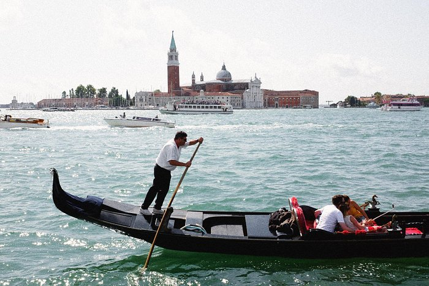

베니스 소개
수백 년 된 건물과 다리, 조용한 운하와 자갈길, 미로 같은 섬이 시선을 사로잡는 베니스보다 더 꿈같은 곳은 없습니다. 이탈리아 베네토주의 주도인 베니스는 굉장히 경이로우면서도 도시의 분위기를 잘 느낄 수 있는 곳입니다.
대운하와 산 마르코 광장은 관광의 거점이며 주변 구불구불한 거리에는 세련된 카페와 젤라토 가게, 기념품 상점, 개인 부티크, 화려한 르네상스 궁전과 고딕 양식의 교회들이 즐비합니다.
꼭 방문해야 할 명소를 둘러본 후에는(캄파닐과 갤러리아 델아카다미아를 놓치지 마세요) 카나레지오, 도르소두로, 카스텔로와 같이 잘 알려지지 않은 인근 마을을 둘러보세요.
이러한 지역에는 현지인들이 식전주인 아페리티프를 마시기 위해 오후에 자주 찾는 소박한 식당인 트라토리아가 있습니다.
대운하와 산 마르코 광장은 관광의 거점이며 주변 구불구불한 거리에는 세련된 카페와 젤라토 가게, 기념품 상점, 개인 부티크, 화려한 르네상스 궁전과 고딕 양식의 교회들이 즐비합니다.
꼭 방문해야 할 명소를 둘러본 후에는(캄파닐과 갤러리아 델아카다미아를 놓치지 마세요) 카나레지오, 도르소두로, 카스텔로와 같이 잘 알려지지 않은 인근 마을을 둘러보세요.
이러한 지역에는 현지인들이 식전주인 아페리티프를 마시기 위해 오후에 자주 찾는 소박한 식당인 트라토리아가 있습니다.